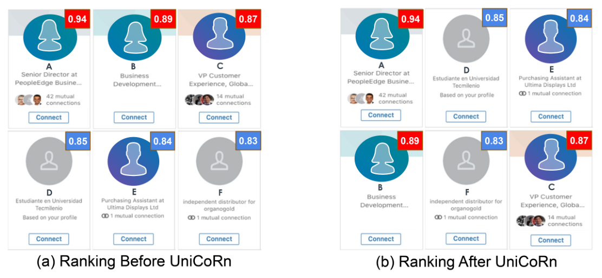

A/B Testing for Recommender Systems in a Two-sided Marketplace (双边市场推荐系统的 A/B 实验设计)
- 会议/期刊: NeurIPS 2021
- 作者与机构: Preetam Nandy, Divya Venugopalan, Chun Lo, Shaunak Chatterjee（LinkedIn Corporation）
- 推荐链路定位: 重排（排序层实验设计 / 反事实重排）
- 研究方向: 去偏公平、可信隐私与工业架构 / 多任务学习与列表级重排
- 论文原文: https://arxiv.org/abs/2106.00762v2
- 开源代码: 暂未开源
TL;DR (1分钟核心速览)
双边市场中生产者侧 A/B 实验违背 SUTVA：图聚类随机化在稠密图下功效低下，传播假设类方法缺乏严格误差控制，且多数需先验已知图结构。UniCoRn 在排序层「统一」互相冲突的反事实排序，用设计不精度 \(\mathbb{E}(R_D-R^*)^2\)与打分成本双目标刻画实验质量，参数\(\alpha\)显式控制二者权衡，并证明\(\alpha=1\)时不精度最优、给出偏差与方差界。LinkedIn 边缘推荐（千万级成员、日均十亿次推荐）40% viewer 流量实测 viewee 侧 WAU\(+0.51\%\)、Sessions\(+0.57\%\)（\(p<0.001\)），且无显著服务延迟增加。
Background & Motivation (背景与核心矛盾)
- 主流范式: 消费侧用标准 A/B 随机分流估计 ATE，其合法性依赖 SUTVA（单元间互不干扰）。
- 前人局限: 生产者体验取决于所有关联消费者的分流，SUTVA 必然失效。图聚类随机化需把图切成近可分离簇，网络越稠密可分离簇越少，丢弃大量边后实验功效骤降；OASIS 类「资源复制 / 预算拆分」或「修改版 treatment 传播」方法虽适配稠密图，却依赖treatment 效应传播形式假设，缺乏严格误差控制；HaThucEtAl 的小 ramp 反事实排序法方差极高且被限制在 10%/10% 分流。
- 核心洞察 (Key Insight): 若全体生产者都分到同一 treatment，则存在唯一的消费侧排序；当生产者被分到不同组时，会同时出现多个互相冲突的「反事实排序」，冲突数量由 treatment/control 打分的相关性 \(\rho\)决定（\(\rho=-1\) 冲突最多）。
- 本文切入点: 放弃图划分与传播假设，直接在排序算子层把冲突的反事实排序融合成一个可行排序，让实验设计本身可量化、可调、可证最优。
Method (核心方法设计)
1. 整体框架 (Overall Architecture)
每次会话输入候选集 \(I_s\)与生产者分流集合\(P_0\)（控制）、\(P_1\)（实验）。先用控制模型\(T_0\)对全库打分得到基准排序与槽位；按概率\(\alpha\)从\(P_0\)随机抽取生产者子集\(P_0^*\)，把其物品与全部\(P_1\)物品合并成混合集\(L\)并记录它们原本占据的槽位；随后对\(L\)内每个物品用其自身所属组的模型打分，转成组内相对名次作为融合分数，在槽位\(L\)上重新排序（并列随机破平）；未参与混合的\(P_0\)物品保持原位。\(\alpha=0\)退化为纯控制打分（零额外成本），\(\alpha=1\) 为最大混合（成本最高、理论最优）。算法全程不需要知道生产者—消费者图结构。
flowchart TD
A["会话候选集 I_s + 生产者分流 P0/P1"] --> B["T0 全库打分得基准排序与槽位"]
B --> C["抽样 α 比例 P0 得 P0*，混合集 L = I_s,1 ∪ I*_s,0"]
C --> D["L 内按组内相对名次 rank_score 重排，随机破平"]
D --> E["最终排序 RD，用于 viewee 侧效应估计"]2. 关键设计拆解 (Key Designs)
-
设计质量的两个可量化标尺（Inaccuracy / Cost）：前人只谈「实验有没有偏」，无法比较两种设计的优劣。本文定义理想排序 \(R^*(i,I_s)=\sum_{k=0}^{K} R_k(i,I_s)\mathbb{I}\{i\in P_k\}\)，即每个物品都用其所属组模型打分时的名次，并把设计不精度定义为\(\mathrm{Inaccuracy}(\mathcal{D})=\mathbb{E}\left(R_\mathcal{D}(i,I_s)-R^*(i,I_s)\right)^2\)；成本定义为打分函数被重复调用的期望次数\(\mathrm{Cost}(\mathcal{D})=\mathbb{E}[N_\mathcal{D}(i,I_s)]\)。物理直觉：不精度即「实验排序偏离理想反事实排序的平方秩误差」，平方形式天然惩罚最坏冲突。
-
UniCoRn 混合算子（消除组间曝光窃取）：直接把两组排序拼起来会造成一个组系统性抢占另一组的名次（cannibalization），使 viewee 侧比较失效。核心融合分数为 \(\mathrm{rank\_score}(i)=R_0(i,I_{s,1}\cup I^*_{s,0})\mathbb{I}\{i\in P^*_0\}+R_1(i,I_{s,1}\cup I^*_{s,0})\mathbb{I}\{i\in P_1\}\)，再在槽位集合\(L=\{R_0(i,I_s):i\in I_{s,1}\cup I^*_{s,0}\}\)内按升序重排并随机破平。该设计保证三条性质：\(P_0\)内部相对序与\(T_0\)一致、\(P_1\)内部与\(T_1\)一致、且随机取一个物品其名次分布在两组间相同且为\(\mathrm{Uniform}\{1,\dots,K\}\)——因为\(L\) 是槽位的均匀随机采样。这是无偏组间比较的根基。
-
最优性与误差界 + 推理开销：\(\alpha=1\)时对任意其他设计\(\mathcal{D}\)有\(\mathbb{E}(R_{\mathcal{D}_U}-R^*)^2\le\mathbb{E}(R_\mathcal{D}-R^*)^2\)；并给出条件偏差与方差界\(|\mathbb{E}(R_{\mathcal{D}_U}-R^*|\mathcal{A})|\le c(k,p_1)\)、\(\mathrm{Var}\le 2\min(r-1,|I_s|-r)p_1(1-p_1)+c(k,p_1)(1-c(k,p_1))\)，其中\(c(k,p_1)=\{k(1-p_1)+(1-k)p_1\}/2\)。等式在\(r\neq(|I_s|+1)/2\)且\(T_1\)排序恰为\(T_0\)的完全逆序时取到，即为最坏冲突场景。成本由\(\alpha\)与分流比\(p_0,p_1\)决定：单 treatment 下总成本约\(c_0+(\alpha p_0+p_1)c_1\)；多 treatment 的「greater mixing」为\(c_0+(1-(1-\alpha)p_0)\sum_{k\ge1}c_k\)，「limited mixing」为\(c_0+\alpha\sum_{k\ge1}c_k+(1-\alpha)\sum_{k\ge1}p_kc_k\)。级联（召回+精排）系统只需把未被某组选中的候选其二次打分置\(-\infty\)，无需额外训练或负采样。
Experimental Setup & Evaluation Protocol (实验设置与评估协议)
- 数据集与预处理: 本文不含离线数据集，评估由合成仿真与线上生产实验两部分构成：
| 环境 | 规模/参数 | 说明 |
|---|---|---|
| 仿真 I（\(\alpha\)影响） | \(L=100\)槽位，\(N_S=50000\)会话，\(\rho\in\{-1,-0.4,0.2,0.8\}\) | 打分由二元高斯生成，\(\rho\) 控制两模型排序冲突度 |
| 仿真 II（对比基线） | \(L=100\)，\(N_S=1000\)会话，重复 100 次 | 响应函数 avg_fn / max_fn，期望 ATE 分别为\(0.16\)与\(-0.87\) |
| 生产环境 | LinkedIn 边缘推荐，750M+ 成员、日均十亿次推荐 | 40% viewer 流量（受并行实验限制，效应被低估） |
- 数据划分与防穿越 (Splitting Strategy): 无训练/测试划分概念；取而代之是生产者级随机分流（\(P_0,\dots,P_K\)互斥、按 ramp 比例\(p_k\)独立随机分配），\(\rho\)与 treatment proportion\(\mathrm{TP}=|P_1|/(|P_0|+|P_1|)\in\{0.1,0.5\}\) 作为控制变量扫描。
- 排名评测协议 (Ranking Protocol): 仿真使用 Full-Ranking（每次会话对全部 \(L=100\)个槽位全排序），误差指标为平均绝对误差 MAE 与均方根误差 RMSE（对应不精度定义），效果指标为 ATE 估计误差；生产侧采用 viewee 级聚合响应\(Y_i\)（窗口内该 viewee 相关指标总计数），报告 treatment 组与 control 组平均响应的相对差\(\Delta\%\)。
- 对比基线与超参设置: 基线为 HaThucEtAl（小 ramp 反事实排序，按其原文限定 10%/10%）与 OASIS 的排名式改造版（用归一化分数 \(p_k(s,i)=T_k(s,i)/\sum_{i=1}^{L}T_k(s,i)\)构造\(p^*(s,i)\)，跳过原始约束优化与事后校正，使得分/排序两种范式可比）；UniCoRn 取\(\alpha\in\{0,0.2,1\}\)；生产显著性以\(p<0.001\) 为准。
Key Experimental Results (实验关键数据)
1. 主实验对比 (Main Results)
线上生产实验（viewee 侧，40% viewer 流量，UniCoRn(0)）：
| 变更类型 | 指标 | Delta % | 显著性 |
|---|---|---|---|
| 候选生成（shared-edge 归一化 vs. 绝对数） | WAU | +0.51% | \(p<0.001\) |
| 候选生成（同上） | Sessions | +0.57% | \(p<0.001\) |
| 精排模型（优化 viewee 留存） | WAU | +0.13% | \(p<0.001\) |
| 精排模型（同上） | Sessions | +0.11% | \(p<0.001\) |
仿真 ATE 估计误差与成本对比（原文以图 4a/4b 呈现，无表格数值，此处按相对关系整理）：
| 方法 | TP=0.1 误差 | TP=0.5 误差 | 成本（定义 2） | 备注 |
|---|---|---|---|---|
| UniCoRn(0) | 中等 | 与 α=1 近似持平 | 最低 | 仅 P1 物品被两组打分 |
| UniCoRn(0.2) | 接近 α=1 | 与 α=1 近似持平 | 中等 | TP=0.1 的推荐折中点 |
| UniCoRn(1) | 最低（RMSE） | 最低（RMSE） | 最高 | 定理 1 的最优设计 |
| HaThucEtAl | 方差显著偏高 | 不适用（仅小 ramp） | 中等 | 被 10%/10% 限制 |
| OASIS（改造版） | 高于 UniCoRn(0) | 高于 UniCoRn(0) | 中等 | 得分式 vs. 排序式差距 |
2. 消融实验 (Ablation Study)
以 \(\alpha\) 为核心消融项（同时消融「混合范围」与「成本」）：
| 配置 | 参与混合的物品 | 成本 | 不精度（RMSE） | 组内 \(P_1\) 偏差 |
|---|---|---|---|---|
| \(\alpha=0\)（无混合） | \(I_{s,1}\) | \(c_0+p_1c_1\) | 较高 | 最大（\(P_0\) 偏差为 0） |
| \(\alpha=0.2\)（limited） | \(\alpha P_0\)+ 全部\(P_1\) | 中 | 接近\(\alpha=1\) | 较小 |
| \(\alpha=1\)（full） | 全部\(P_0\)+ 全部\(P_1\) | \(c_0+c_1\) | 最低（理论最优） | 最小 |
（若进一步消融掉「随机破平 + 均匀槽位采样」，则组间名次分布不再同为 \(\mathrm{Uniform}\{1,\dots,K\}\)，cannibalization 直接引入系统性偏差——这是设计成立的硬前提。）

3. 关键实验发现 (Key Findings)
- \(\alpha=1\)在平方损失下确为最优，但 MAE 上\(\alpha=0\)略优：因为\(\alpha=0\)时\(P_0\)物品误差恒为 0、误差全部集中在\(P_1\)；这正说明不精度定义（平方秩误差）与人们在意的 MAE 并不等价，指标选择会改变设计偏好。
- \(\rho=-1\)（两模型排序完全逆序）最难、\(\mathrm{TP}\)越高越难：冲突数量随\(\rho\)下降与 ramp 上升而增加，对应定理 2 中偏差/方差界取等号的对抗场景；\(\mathrm{TP}=0.5\)时最便宜的 UniCoRn(0) 已在成本—误差帕累托前沿上，而\(\mathrm{TP}=0.1\)必须用\(\alpha\approx0.2\)才追平\(\alpha=1\)，即低 ramp 对\(\alpha\) 显著更敏感。
- 线上候选生成变更的 viewee 增益（WAU \(+0.51\%\)、Sessions\(+0.57\%\)）约为精排模型变更（\(+0.13\%\)、\(+0.11\%\)）的 4 倍，且 UniCoRn(0) 以 Java 实现在分布式实时系统上线后未带来统计显著的服务延迟增加，说明「只对\(P_1\) 子集重打分」的低成本变体足以支撑十亿级推荐的生产实验。
Highlights & Limitations (亮点、对比与审稿批判)
- 与代表作对比 (vs. Prior Work): 相比图聚类随机化，UniCoRn 不切图、不依赖密度，稠密图下不损失功效；相比 OASIS，不做效应传播假设、无需解约束优化与事后校正，且排序式融合优于得分式归一化；相比 HaThucEtAl，突破 10%/10% 小 ramp 限制、方差显著更低，并把其作为 \(\alpha\to0\) 的特例纳入统一框架。
- 可迁移亮点: (i) 用 \(\mathbb{E}(R_D-R^*)^2\) 作为「实验设计质量」的离线可计算代理指标，可在不跑线上实验的前提下比较多种分流方案；(ii) 「随机槽位采样 + 组内相对名次 + 随机破平」这一组合可作为任何列表级对照实验的公平重排模板。
- 审稿级局限批判: (i) 由于所有 viewer 都收到混合排序，viewer 注意力类效应（停留时长、会话数）会被稀释，该方法只捕捉生产者曝光分布差异，无法度量双侧联合效应，且缺少 ground truth 无法验证测量保真度；(ii) 不精度基于平方秩误差，与 ATE 估计精度之间并无一般性等价关系（作者也承认需额外假设），且 \(\alpha\) 与 TP 的敏感度在 max_fn 型凹性较强的排序—响应函数下被放大，超参选择偏经验。
Rating (四维评分)
- 方法创新性 (Novelty): ⭐⭐⭐⭐ （把「双边市场实验设计」转化为排序层的反事实融合问题，并给出最优性与偏差/方差界，机制简洁且有理论支撑）
- 评估协议与实验扎实度 (Protocol & Experiments): ⭐⭐⭐ （仿真覆盖 \(\rho\)、TP、\(\alpha\)与两类响应函数，线上 40% 流量\(p<0.001\)，但无公开数据集、无 ground truth 校验，且线上仅报告两个指标）
- 写作与数学规范度 (Clarity & Rigor): ⭐⭐⭐⭐ （不精度/成本定义与算法步骤清晰，定理与证明完整，成本公式区分 greater/limited mixing 便于工程选型；但部分证明推至附录、\(\alpha<1\) 的界仅留作练习）
- 工业落地与复现价值 (Industrial & Practical Value): ⭐⭐⭐⭐⭐ （千万级成员、十亿级推荐真实部署且零显著延迟增加，级联系统仅需把未选中候选打分置 \(-\infty\) 即可接入，改造成本极低；不足是代码未开源）